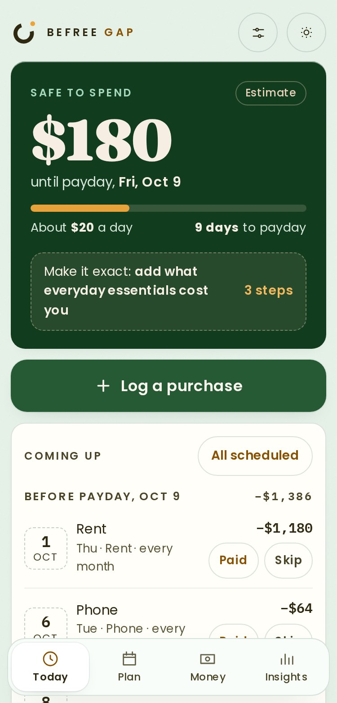
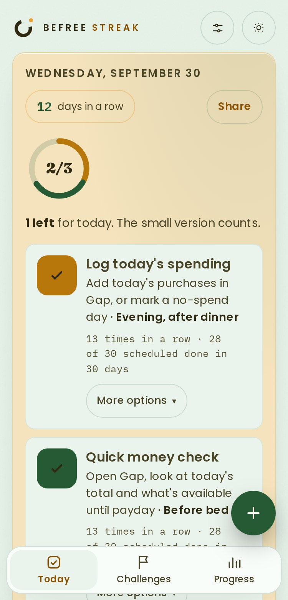

Two apps.
One calmer paycheck.
Gap shows what's safe to spend until payday. Streak builds the small habits that keep it that way. Install both, one after the other; each takes about a minute.
No accountNo bank loginStays on your phoneWorks offline


-
1
Gap
Not installed yetSafe to spend until payday, every bill before it's due, and a plan for each paycheck, including the extra ones.
-
2
Streak
Not installed yetSmall money habits, ticked off day by day, with seasonal challenges like No-Spend November. Hard days have a small version that still counts.
Both apps are installed
Open Gap and Streak from their icons from now on, not from this browser tab. Save a backup from each app's Settings once a week.
Good to know before you install
- Two separate apps. Gap and Streak each keep their own records, so each one needs its own backup.
- iPhone and iPad: use Safari, or Chrome on iOS 16.4 or later. On a Mac, use Safari (File, then Add to Dock) or Chrome.
- Private by design. Your entries are stored in the app on this device. Nothing is sent to us, and there is no login to lose.
- Moving from the older one-window version? Save a backup in the old app first, then restore it in the new app from Settings.